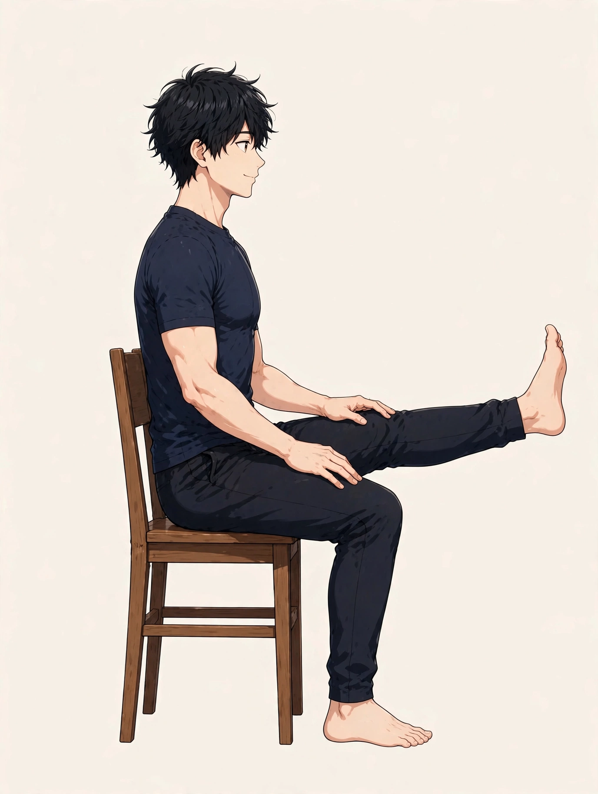

SYMPTOM GUIDE ｜ 東三国・新大阪
膝裏の張りでお悩みの方へ東三国・新大阪の男性専用整体院 北辰堂

膝を伸ばすと裏側が突っ張る、正座から立つときに膝裏が硬い——。膝の痛みとは別の場所の感覚として、膝裏の張りを相談されることがあります。
このページでは、膝裏を通る筋肉と神経の構造、張りの背景、膝の痛み全般のページとの違い、東洋医学の考え方とツボ、施術の考え方、セルフケア、受診の目安を整理しました。膝裏という場所に絞って解説します。一般的な健康情報としてご覧ください。
① 膝裏の張りとは
膝の裏（膝窩）には、太ももの裏のハムストリングスの腱、ふくらはぎの腓腹筋の始まり、そして坐骨神経から分かれる神経や血管が集まっています。膝を伸ばす動きと、股関節を曲げる動きが重なると、この場所の組織は一斉に伸ばされます。
張りの背景として多いのは、ハムストリングスの硬さです。座り仕事では膝を曲げた姿勢が続き、太もも裏は縮んだまま硬くなります。立ち上がって膝を伸ばしたときや、前屈で手を伸ばしたときに、膝裏の突っ張りとして感じます。
もう一つ、膝裏の張りは腰からの神経の通り道とも関係します。坐骨神経痛のページで扱うような、腰由来の張りやしびれが膝裏に表れることもあるため、「張りだけか、しびれを伴うか」の区別が大切です。
ハムストリングスは太ももの裏を縦に走り、腓腹筋は膝裏からふくらはぎへつながります。膝裏は筋肉・神経・血管が集まる場所です。位置は目安です。
② 要因の整理
膝裏の張りの要因は、太もも裏の硬さと、腰からの影響に整理できます。
- ハムストリングスの硬さ：座位で縮み続けた太もも裏が硬くなると、膝を伸ばす動きのたびに膝裏が突っ張ります。最も多い要因です。
- ふくらはぎの緊張：腓腹筋は膝をまたぐ筋肉のため、ふくらはぎの硬さも膝裏の張りに影響します。立ち仕事や運動の後に強まりやすい要因です。
- 腰・神経の通り道の影響：坐骨神経の通り道の緊張があると、膝裏に張りやしびれ感が表れることがあります。前屈で張りが強まる場合は関係が疑われます。
- 膝関節自体の状態：関節の腫れ（水がたまる状態）や、膝裏の嚢胞などが張りの要因になることもあります。腫れを伴う場合は見極めが必要です。
- 運動後の回復不足：ランニングや筋トレの後に太もも裏の疲労が残ると、数日間、膝裏の張りとして感じることがあります。
③ セルフチェックリスト
膝裏の状態を振り返るためのチェックです。しびれの有無にも注目してお使いください。
- 膝をまっすぐ伸ばすと裏が突っ張る
- 前屈で手が床に届きにくく、膝裏が張る
- 正座や膝を深く曲げた後に伸ばしにくい
- 長時間座った後に立ち上がると膝裏が硬い
- 膝裏に腫れやふくらみを触れる
- 張りにしびれが伴うことがある
- 運動の翌日に膝裏の張りが強い
- 左右で張りの強さが違う
チェックは診断のためのものではありません。膝裏の腫れが大きい、しびれが続く、膝が完全に伸びないといった様子がある場合は、⑧の受診の目安を確認してください。
④ 東洋医学から見た考え方とツボ
東洋医学では、膝裏は足の太陽膀胱経の委中がある場所として知られます。委中は「腰背は委中を求む」という言葉があるほど、腰から脚の裏側の巡りと関係づけられる代表的なツボです。膝裏の張りを、脚の裏側全体の巡りの滞りとして捉える見方があります。
委中の外側の委陽、ふくらはぎの承山も同じ流れのツボです。膝裏のケアは、太もも裏からふくらはぎまでの裏側のライン全体で考えるのが東洋医学的な見方です。
委中は膝裏の中央、委陽はその外側、承山はふくらはぎの中央にあります。位置は目安です。膝裏の中央は神経や血管が近いため、ごく弱い圧で行います。
ツボ：委中（いちゅう）
位置：膝裏の横皺のちょうど中央です。脚の裏側の巡りの要とされるツボです。
押し方：膝裏の中央は神経や血管が浅い場所のため、指で軽く触れる程度にとどめます。ほぐしたい場合は、膝裏そのものより太もも裏やふくらはぎ側からアプローチする方法が安全です。
ツボ：委陽（いよう）
位置：膝裏の横皺の外側の端、大腿二頭筋の腱の内側にあります。
押し方：指の腹で小さく円を描くように、弱い圧で30秒ほど行います。腱の上を強く押さないよう注意してください。
ツボ：承山（しょうざん）
位置：ふくらはぎの中央、腓腹筋が二つに分かれるあたりです。つま先立ちをすると形が浮き出ます。
押し方：椅子に座り、反対側の膝の上にふくらはぎを乗せて体重で圧を加える方法が向いています。左右各30秒ほどが目安です。
⑤ 整体・リラクゼーションでの施術の考え方
北辰堂の施術では、膝裏そのものを強く押すことはしません。膝裏は神経や血管が集まる場所であり、直接の強い圧は避けるべき部位です。施術では、太もも裏のハムストリングスとふくらはぎの緊張を整え、膝裏が引っ張られる構造をゆるめる方向で進めます。
腰由来の張りが疑われる場合は、腰や臀部の状態もあわせて確認します。膝裏の張りの原因が膝の上流（腰・臀部）にあるケースは少なくありません。
腫れを伴う場合や、膝が完全に伸びない・曲がらない場合は、施術より先に医療機関での確認をおすすめします。関節の中の状態の確認が先というのが当院の考え方です。
⑥ セルフケア
太もも裏とふくらはぎをゆるめるケアを中心に紹介します。膝裏を直接強く押すことは避けてください。

椅子に座って太もも裏を伸ばします。①椅子に浅く座り片脚を前に伸ばす ②背筋を伸ばしたまま体を前に傾ける ③太もも裏の伸びを感じる位置で20秒保つ、が基本の流れです。
セルフケア1：椅子での太もも裏ストレッチ
椅子に浅く座って片脚を前に伸ばし、背筋を伸ばしたまま体を前に傾けます。太もも裏の伸びを感じる位置で20秒保ち、左右行います。背中を丸めないことがコツです。
セルフケア2：タオルを使った仰向けストレッチ
仰向けで足裏にタオルを掛け、膝をできるだけ伸ばしたまま脚を持ち上げます。太もも裏の伸びを感じる位置で20秒ほど。しびれが出る場合は中止してください。
セルフケア3：ふくらはぎの壁ストレッチ
壁に手をつき、片脚を後ろに引いてかかとを床につけたまま20秒保ちます。膝裏からふくらはぎまでのラインをまとめて伸ばす方法です。
セルフケア4：膝の曲げ伸ばし運動
椅子に座り、膝をゆっくり伸ばして曲げる動きを10回繰り返します。関節の動きを滑らかに保つ基本の運動です。痛みがある場合は中止します。
⑦ 場面別の注意
- デスクワーク中：膝を曲げたままの座位が続くと、太もも裏は縮んだままになります。1時間に一度は立ち上がり、椅子でのストレッチを挟んでください。
- 運動の前後：ランニングや球技の前後は、太もも裏の準備と整理が大切です。張りが残ったままの急なダッシュは肉離れの要因になります。
- 長時間の移動後：車や電車で膝を曲げ続けた後は、膝裏が硬くなります。移動後に膝の曲げ伸ばしと短い散歩でほぐしてください。
- 就寝時：膝裏の張りが気になる日は、膝の下に小さなクッションを置いて少し曲げた姿勢が楽なことがあります。完全に伸ばし切る姿勢がつらい時期の工夫です。
⑧ 受診の目安
- 膝裏に大きな腫れやふくらみがある
- 膝が完全に伸びない・曲がらない
- 脚のしびれや力が入りにくい感覚が続く
- ふくらはぎの腫れ・熱感・痛みを伴う
- 転倒やスポーツの後から張りと痛みが続く
- 発熱や膝の腫れ・熱感を伴う
膝裏の張りには、関節の状態や血管の問題が関係する場合があります。ふくらはぎの腫れと熱感を伴う場合は、迷わず医療機関へ相談してください。しびれが続く場合は整形外科での確認も検討してください。
⑨ よくある質問
Q. 膝の痛みのページとの違いは何ですか？
膝の痛みのページは関節の前面や内側など、痛み全般を扱います。このページは膝裏の「張り」に絞り、ハムストリングスやふくらはぎとの関係を中心に解説しています。痛みが中心の方は、膝のページもあわせてご覧ください。
Q. 膝裏は自分で押してもよいですか？
膝裏の中央には神経や血管が浅い場所を通るため、強く押すことはおすすめしません。ほぐしたい場合は、太もも裏やふくらはぎ側からアプローチする方法が安全です。委中への刺激も、触れる程度の弱い圧にとどめてください。
Q. 前屈で膝裏が張るのは腰のせいですか？
太もも裏の硬さが中心の場合と、腰からの神経の通り道の緊張が関係する場合があります。しびれを伴う、腰の動きで張りが変わるといった場合は、腰側の確認も必要です。坐骨神経痛のページも参考にしてください。
Q. ストレッチは毎日続けたほうがよいですか？
太もも裏の硬さが背景の場合は、毎日の小さな継続が変化につながります。ただし、痛みやしびれが強まる場合は中止し、医療機関で確認してください。勢いをつけた反動のある伸ばし方は避けます。
北辰堂のご案内
北辰堂は、大阪市淀川区東三国二丁目にある整体院です。男性スタッフ1人で運営しているため、男性専用としています。施術歴30年の平賀伸人（鍼灸師・国家資格）が、整体とリラクゼーションを行います。当院では鍼灸施術は行いません。営業は平日・土曜17:00〜22:00、日曜10:00〜22:00の完全予約制です。料金は60分 初回2,000円／2回目以降6,000円、90分 初回3,000円／2回目以降9,000円で、お支払いは現金のみです。プライバシーへの配慮のため、詳しい住所はご予約確定後にLINEでご案内します。
メニュー・料金は料金・メニューページ、施術者については当院についてをご覧ください。
関連するお悩み
ご予約・ご相談はLINEから
東三国・新大阪・淀川区周辺で、体のケアの相談先をお探しの方は、LINE公式アカウント（北辰堂）からお気軽にご連絡ください。現在の状態をお聞きしたうえで、施術の進め方をご案内します。
LINEで予約する